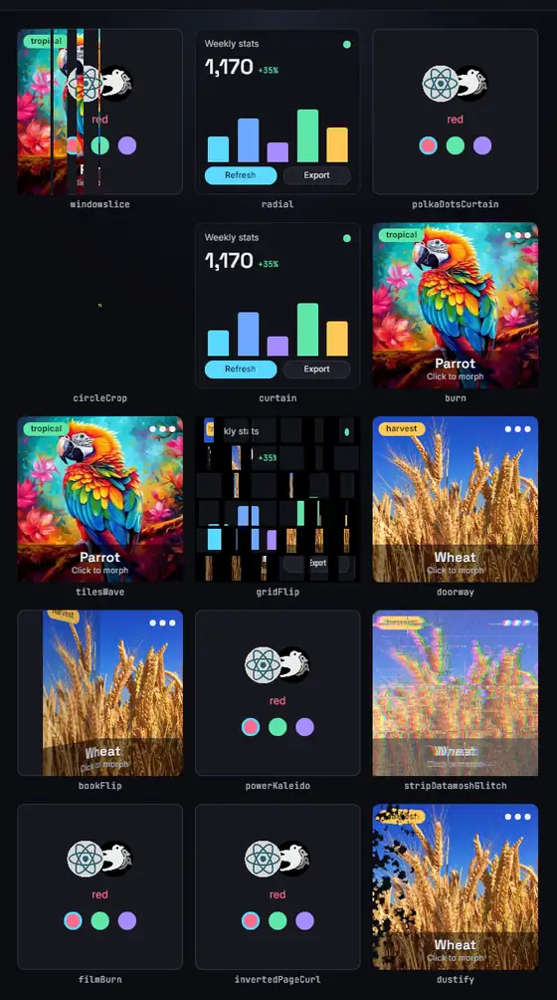
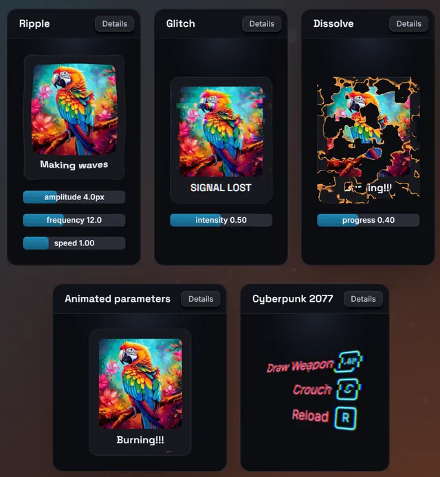

Custom filters
A custom filter is a Rust params struct plus a WGSL fragment shader. Once
registered, it is used by name exactly like a built-in: regular filters in
the filter and backdropFilter chains, morph filters in morphFilter.
The params struct is the single source of truth for the TSX side: the
generated bevy.ts types the filter's name and params.
Usage
Declare the params struct, register it, regenerate bevy.ts, and use the
name from a style:
TSX
<node
style={{
padding: 16,
filter: { name: "scanlines", params: { spacing: 3, strength: 0.4 } },
}}
>
<text>INCOMING TRANSMISSION</text>
</node>Rust
use bevy::prelude::*;
use bevy_react::prelude::*;
use bevy_react::protocol::units::Length;
/// Packs as params[0].x = spacing (px), params[0].y = strength.
#[react_filter(shader = "shaders/scanlines.wgsl")]
struct Scanlines {
/// Distance between dark rows.
#[serde(default = "default_spacing")]
spacing: Length,
/// 0 = no lines, 1 = black lines.
#[serde(default)]
strength: f32,
}
fn default_spacing() -> Length {
Length::Px(4.0)
}
pub fn register_bindings(app: &mut App) {
app.add_react_filter::<Scanlines>();
}The shader lives in your assets folder (assets/shaders/scanlines.wgsl):
#import bevy_react::filter::{FullscreenVertexOutput, sample_source, uniforms}
@fragment
fn fragment(in: FullscreenVertexOutput) -> @location(0) vec4<f32> {
let spacing = max(uniforms.params[0].x, 1.0);
let strength = uniforms.params[0].y;
let row = in.uv.y * uniforms.resolution.y;
let dark = step(0.5, fract(row / spacing)) * strength;
let c = sample_source(in.uv);
// Scaling rgb by a factor is valid on premultiplied color.
return vec4<f32>(c.rgb * (1.0 - dark), c.a);
}Call register_bindings from both your app (a plugin's build) and your
bindings exporter, then regenerate bevy.ts. A filter registered only in the
running app works at runtime but is missing from the typing, and one
registered only in the exporter type-checks but warns filterUnknown at
runtime. See TypeScript codegen for the exporter
setup.
The params struct
#[react_filter] takes a struct with named fields and these arguments:
| Argument | Default | Effect |
|---|---|---|
shader |
required | Asset path of the WGSL file; embedded:// paths work too |
name |
struct name, first letter lowercased | The filter's name in TSX (Scanlines becomes "scanlines") |
outset |
0 |
Logical px the effect may paint outside the node (see Outset) |
time |
false |
Re-run the pass every frame (see Time-driven filters) |
Each field is one param, named in TSX exactly as the field is written (no case conversion). Supported field types:
| Field type | TSX value | In the shader |
|---|---|---|
f32 |
number |
1 component, as-is |
Vec2, Vec3, Vec4 |
[number, number] (…) |
2–4 components |
[f32; 2], [f32; 3], [f32; 4] |
[number, number] (…) |
2–4 components |
Angle |
degrees as a number, or "1rad", "0.25turn" |
1 component, radians |
Length |
px as a number or "12px" |
1 component, physical px |
FilterColor |
CSS color string | 4 components, linear straight-alpha RGBA |
Angle and Length come from bevy_react::protocol::units, FilterColor
from bevy_react::filters. Any other field type is a compile error.
- Packing. Fields fill
uniforms.params(8vec4s) in declaration order, component by component. A multi-component field that would cross avec4boundary starts at the nextvec4instead, leaving the skipped components zero. A struct that packs into more than 8vec4s compiles but every use is rejected with afilterParamswarning. - Defaults. Every param is optional in TSX, so give every field a
#[serde(default)]or#[serde(default = "…")]. Omitting a field that has no default rejects the whole entry with afilterParamswarning, as do unknown param keys and values of the wrong type. - Units. A
Lengthaccepts px only;"50%"or"2vw"rejects the entry. It arrives in the shader already multiplied by the display's scale factor, matchingresolution. A plainf32arrives unscaled. - Built-in names. A custom filter registered under a built-in's name replaces the built-in, in the app and in the generated typing alike.
Writing the shader
The shader imports the prelude with #import bevy_react::filter::{…} and
names its entry point fragment (filter is a reserved word in WGSL). It
runs once per pixel of the node's capture: in.uv spans the image 0..1,
y down, and whatever the function returns is written as-is, alpha included.
The prelude provides:
| Item | What it is |
|---|---|
FullscreenVertexOutput |
The fragment input; uv is the pixel's position |
uniforms.params |
array<vec4<f32>, 8>, your packed params |
uniforms.resolution |
The image size in physical px |
uniforms.texel_size |
One pixel in UV units (1.0 / resolution) |
uniforms.time |
Seconds since startup, for time = true filters |
uniforms.content_inset |
The outset margin on each side, physical px |
sample_source(uv) |
This pass's input: the capture, or the previous chain entry's output |
sample_capture(uv) |
The node's unfiltered capture, whatever ran before |
sample_source_lod, sample_capture_lod |
The same at an explicit LOD, for non-uniform control flow |
content_uv(uv) |
uv remapped to 0..1 over the node's border box |
content_rect_min(), content_rect_size() |
The border box inside the image, physical px |
premultiply(c), unpremultiply(c) |
Alpha conversions; unpremultiply of a transparent pixel is zero |
Sampling outside 0..1 returns the edge pixel. textureSample needs
uniform control flow, so when you branch on per-pixel data before sampling,
use the _lod variants.
Premultiplied alpha
Every input is premultiplied color, and the output must be premultiplied again:
- Color operations (contrast, hue shifts, curves) are defined on straight
alpha:
unpremultiplythe sample, changergb,premultiplythe result. Scalingrgbby a factor, as in the example above, is the exception: it gives the same result either way. - Resampling (blurs, distortions, any weighted average of neighboring pixels) must work on the premultiplied samples directly. Unpremultiplying first bleeds the hidden color of transparent pixels into visible fringes at the edges.
- A fully transparent pixel is
vec4(0.0). AFilterColorparam is straight alpha: multiply itsrgbby itsabefore writing it out.
Outset
By default the filter only sees and paints the node's border box. An effect
that reaches outside it (a glow, a displacement) declares how far with
outset, in logical px:
#[react_filter(shader = "shaders/ripple.wgsl", outset = 12.0, time = true)]
struct Ripple {
#[serde(default)]
amplitude: f32,
}The image is then inflated by a margin on every side, and uv,
resolution and the sampling helpers cover the inflated image. The margin
is at least the outset, but it can be larger: the outsets of every entry in
the chain add up and the total is rounded up. Read the actual margin from
uniforms.content_inset, or anchor geometry to the node with
content_uv(). The margin starts transparent.
The outset argument is a constant. It cannot depend on a param value; size
it for the largest value your UI uses, or the effect is cut off at the
margin.
Time-driven filters
With time = true the pass re-runs every frame and uniforms.time
advances, so the filter animates on its own. Only the filter re-runs: the
node's content is captured once and reused while it does not change. Without
time = true, the pass re-runs only when the content or the params change,
so animate it from React state, a transition or an { animated } binding
instead.
uniforms.time is an f32 that grows without bound. Avoid hashes such as
fract(sin(x) * 43758.5) seeded from it: they lose precision after a few
minutes of uptime. An integer hash of a quantized time stays exact.
Custom morph filters
A morph filter blends a node's frozen previous appearance into its live
content when the morphFilter key changes (see
Morph filters for the style side). A custom
one uses #[react_morph_filter] and add_react_morph_filter:
TSX
<node
style={{
morphFilter: { key: page, name: "windowslice", params: { count: 14 } },
}}
>
{pages[page]}
</node>Rust
#[react_morph_filter(shader = "shaders/morphs/windowslice.wgsl")]
struct Windowslice {
/// Number of blinds.
#[serde(default = "default_count")]
count: f32,
/// Soft lead of the sweep, as a fraction of the width.
#[serde(default = "default_smoothness")]
smoothness: f32,
}
app.add_react_morph_filter::<Windowslice>();The struct follows the same rules as a regular filter's, but the macro takes
only shader and name: a morph never paints outside the node and already
re-runs every frame while it plays. The shader uses three prelude functions:
morph_progress(): the blend factor,0to1, already eased by the morph's timing.morph_sample_from(uv): the frozen previous appearance.morph_sample_to(uv): the live content.
morph_sample_from_lod and morph_sample_to_lod are the explicit-LOD
variants. Both images are premultiplied; mix them directly.
#import bevy_react::filter::{
FullscreenVertexOutput,
morph_progress,
morph_sample_from,
morph_sample_to,
uniforms,
}
@fragment
fn fragment(in: FullscreenVertexOutput) -> @location(0) vec4<f32> {
let progress = morph_progress();
if progress <= 0.0 { return morph_sample_from(in.uv); }
if progress >= 1.0 { return morph_sample_to(in.uv); }
let count = uniforms.params[0].x;
let smoothness = max(uniforms.params[0].y, 1e-4);
let x = in.uv.x - progress * (1.0 + smoothness);
let edge = smoothstep(-smoothness, 0.0, x);
let s = step(edge, fract(count * in.uv.x));
return mix(morph_sample_from(in.uv), morph_sample_to(in.uv), s);
}Rules for morph shaders:
- Identity contract. At progress
1the output must be exactlymorph_sample_to(uv). The morph renders one final frame at exactly1before it ends, and any difference flashes on that frame. Returning exactlymorph_sample_from(uv)at0keeps the start seamless the same way; the early returns above handle both ends. - One pass, at most 6 params
vec4s. The last two of the 8 are reserved for the engine. A morph over the cap, or a hand-written one resolving to several passes, is rejected with amorphFilterParamswarning and the change snaps. - Both images are sampled at the same
uv: the frozen image is stretched onto the node's current box, so a size change across the key change stretches the old appearance.
The demos app ports a pack of gl-transitions
transitions this way; their shaders, in
examples/assets/shaders/morphs/,
are worked examples, registered in
examples/demos/filters.rs.

Two families
Regular filters and morph filters are separate, in the typing and at runtime:
#[react_filter]+add_react_filternames land in the generatedBevyFiltersinterface and are accepted byfilterandbackdropFilter.#[react_morph_filter]+add_react_morph_filternames land inBevyMorphFiltersand are accepted bymorphFilteronly.
Using a name from the wrong family is a type error in TSX. At runtime the
entry is skipped with a filterParams or backdropFilterParams warning in
a chain, or snaps with a morphFilterParams warning in morphFilter.
Transitions and animated params
Custom filters take part in filter transitions and
{ animated } param bindings like the built-ins, with two differences:
- A custom filter has no identity value. When a transition adds or removes a
custom entry, the chains swap at the halfway point instead of fading. Keep
the entry in the base style with a no-op param value (
strength: 0above) when it should fade in and out. { animated }bindings drivef32,Length,AngleandFilterColorparams. Vector and array params cannot be bound; the binding is ignored with afilterBindingwarning (backdropFilterBinding,morphFilterBindingon those styles).
Multi-pass filters
#[react_filter] always produces a single pass. For several passes, or an
outset computed from the params, implement the ReactFilter trait from
bevy_react::filters by hand on a struct deriving serde::Deserialize and
ts_rs::TS. Its resolve returns one ResolvedFilterPass per pass, each
with its own shader and packed params, and its outset receives the decoded
params. Each pass's sample_source reads the previous pass's output, and
sample_capture still reads the node's unfiltered capture. The built-in
blur (two passes) and
bloom are complete
implementations. Register it with add_react_filter like any other filter.
Precompiling shaders
A filter's GPU pipeline compiles in the background the first time it is
used, and the node draws nothing until it is ready. By default every
registered filter and morph is compiled at startup instead, so first use is
instant. precompile_filters narrows that per group: builtins (everything
bevy-react ships, morphs included), filters (your add_react_filter
filters) and morphs (your add_react_morph_filter morphs), each All
(the default), Names(..) or Off:
use bevy_react::{FilterSelection, PrecompileFilters};
app.add_plugins(ReactPlugins.set(
ReactUiPlugin::default().precompile_filters(PrecompileFilters {
morphs: FilterSelection::Names(vec!["windowslice".into()]),
..default()
}),
));A name that is unknown or belongs to another group is skipped with a
precompileFilters warning at startup. A hand-written multi-pass filter
whose params do not all have defaults precompiles its first shader only.
Limits
- A shader that fails to compile makes the filtered node invisible until it is fixed. The error is logged to the terminal, naming the layer.
- At most 8 param
vec4s per pass (6 for a morph). - The
outsetargument is a constant; a param-dependent outset needs a hand-writtenReactFilter. - A
time = truefilter inside another composited layer (an ancestor with afilter,transform3d,opacityon a node with children, orcache) keeps animating in its own layer but appears frozen, because the enclosing layer reuses its cached capture. Setcache: "never"on the enclosing layer (see Layers). - Custom filters cannot fade in or out through an identity value (see above), and vector params cannot be animated.

See the filter reference for the built-ins' params,
and filter,
backdropFilter and
morphFilter in the style
reference. Filters on a backdrop receive an opaque source; see
Backdrop filters.